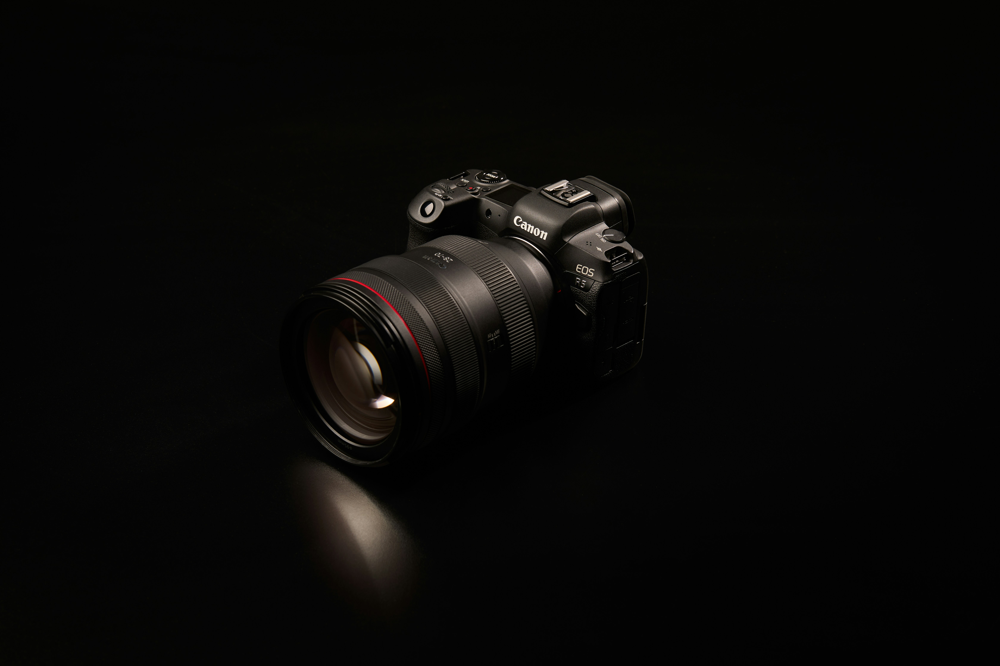
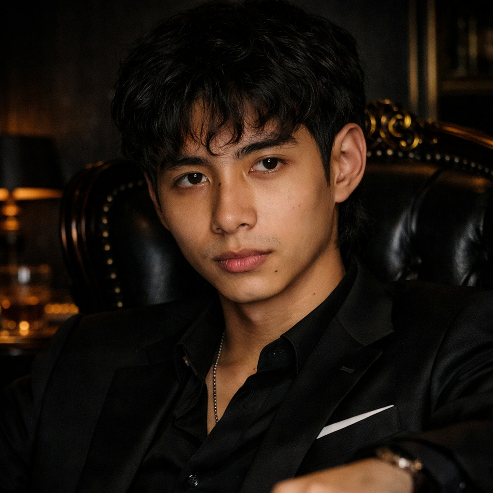
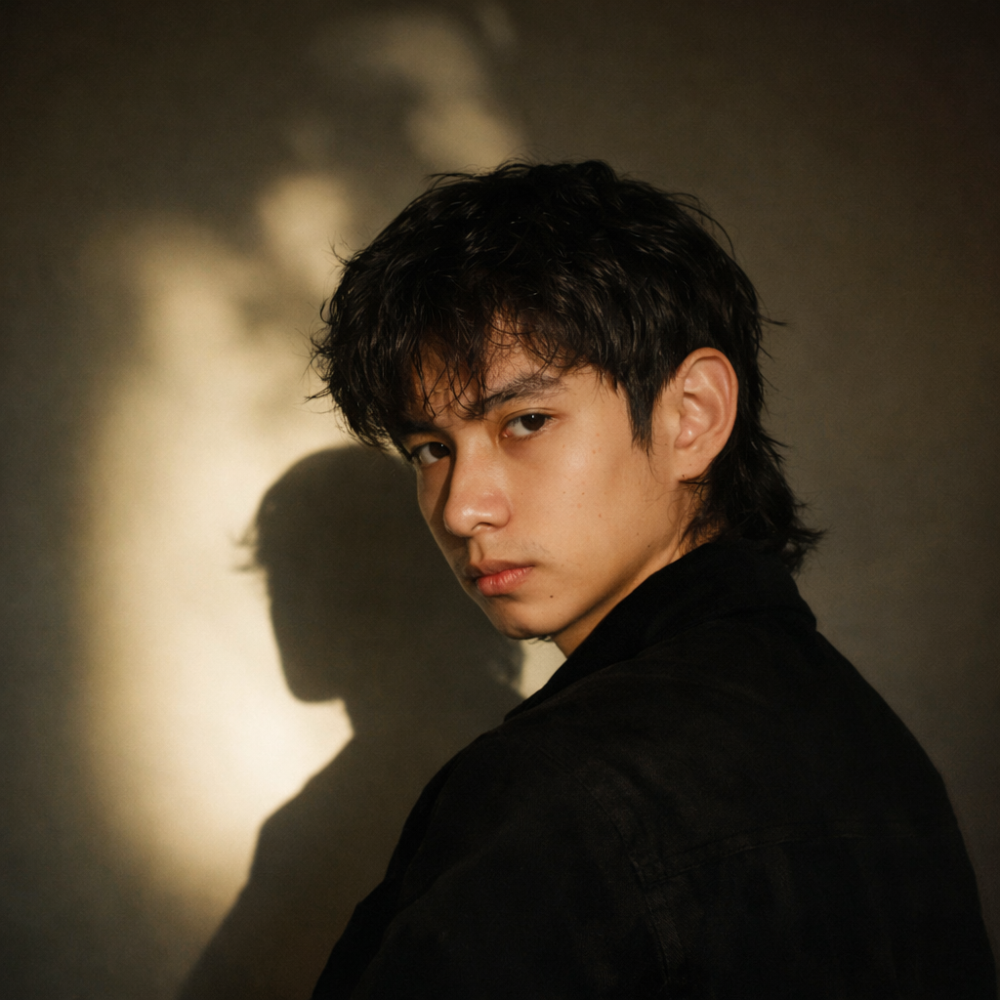
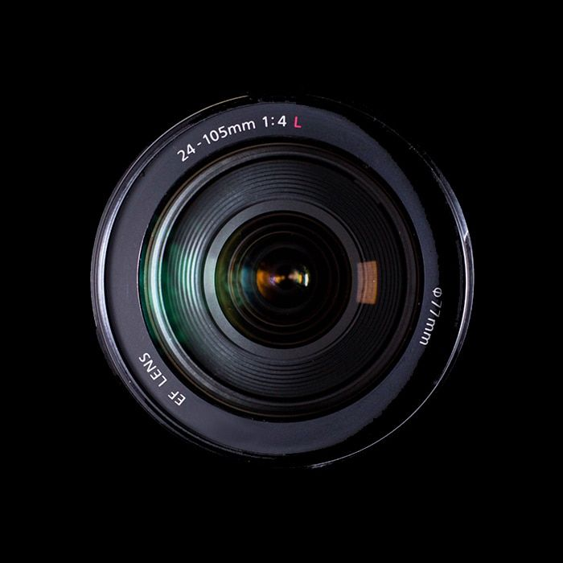

Kombinasi sensor full-frame 61MP dan prosesor AI terbaru untuk autofokus presisi. Revolusi fotografi profesional Anda dimulai di sini.

"Kamera ini bukan sekadar alat, tapi perpanjangan mata saya. Ketajaman warna dan kecepatan fokusnya benar-benar mengubah cara saya bekerja di studio."
SnapPro memberikan kebebasan bagi para kreator untuk mengeksplorasi sudut pandang baru dengan teknologi sensor tercanggih di kelasnya.
"Alat yang benar-benar memahami kebutuhan fotografer modern. Performa low-light nya luar biasa."


Didesain untuk memenuhi tuntutan fotografer dan videografer paling visioner.

Dari *ultra-wide* hingga *super-telephoto*, setiap lensa didesain untuk memaksimalkan potensi sensor 61MP. Ketajaman sudut-ke-sudut yang belum pernah ada sebelumnya.
Jadilah yang pertama mengetahui rilis aksesoris terbaru dan workshop fotografi kami.